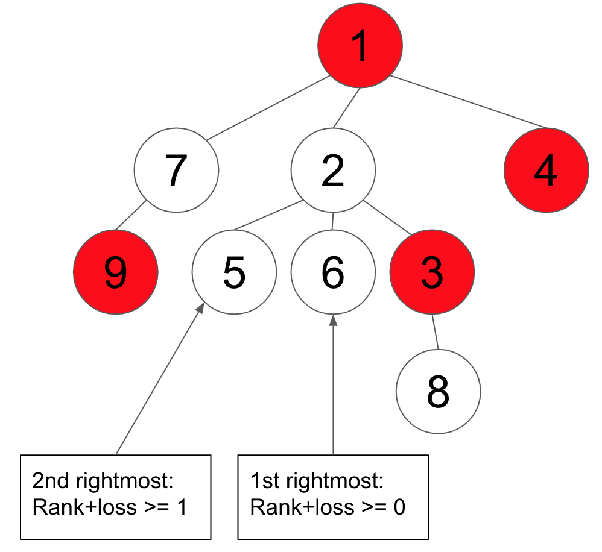
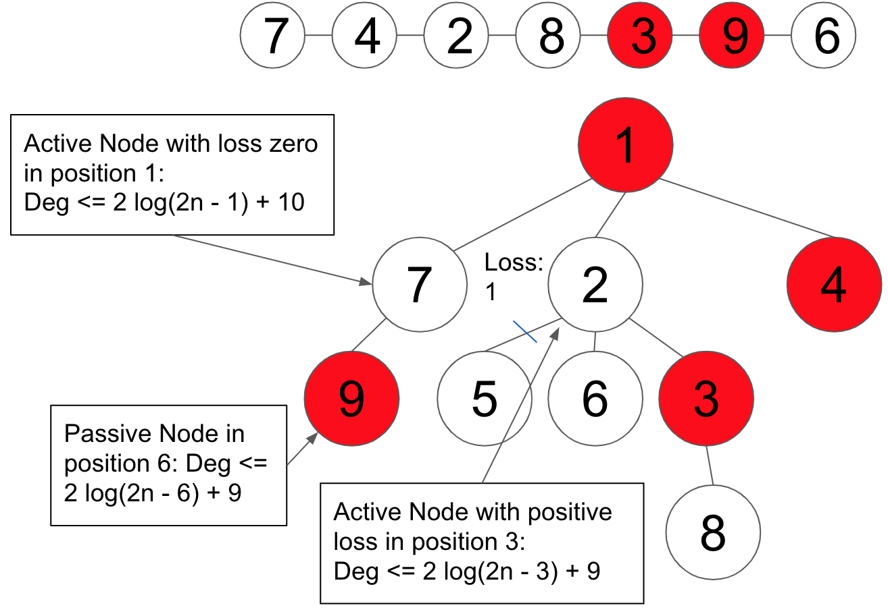

The 5 invariants I1 - I5 listed below are what we will maintain consistently throughout all the heap operations(i.e. DeleteMin, Merge, DecreaseKey, Insert). Given the invariants are satisfied, we will derive and prove some lemmas that will be useful in the analysis in the later sections
For the analysis below, we define R = 2logN + 6 N is used as the size of the heap throughout the entire site
I1: For an active node, the i-th rightmost active child has rank + loss ≥ i - 1

Lemma 1: If I1 is satisfied and the total loss is L , then the maximum rank of the tree is: r ≤ logN + √2L + 2
Proof
We first define k to be the smallest integer such that k(k+1)/2 ≥ L
We will use proof by contradiction and assume: r ≥ logN + k + 1 is true
Note, logN + k + 1 < logN + √k*(k+1) +2 , so we are proving a stronger statement
Assume x is an active node with the maximum rank r , we will show the contradiction by proving the subtree, Tx , rooted at x has size N + 1 .
Given I1 is satisfied, i.e. All active children of the active nodes in Tx has rank+loss ≥ i - 1 , and the total loss is L . And given the contradiction, x has at least r active children. We can construct the minimum Tx by starting with a binomial heap of size 2r or root degree r with all nodes being active (we want the minimum, so we should not keep passive nodes). All nodes satisfy I1 by having rank = i-1 and loss =0
To achieve loss L and keep Tx minimal, we will cut the L biggest grandchildren of x (we can't cut children of x because it needs rank r
We know, in a binomial heap, there are j grandchildren of degree r - j - 1 , so the total number of grandchildren with degree ≥ r - k -1 is 1 + 2 + 3 + ... + k = k(k+1)/2 ≥ L
That is, if we cut all these grandchildren, we definitely have loss L , then all grandchildren of degree ≤ r - k - 2 are kept in Tx , that is at the child, w , of x with degree = r - k - 1 ≥ logN
didn't lose any of its subtrees, so w has size ≥ 2logN = N . So x has size ≥ N + 1
Thus, by contradiction, we proved Lemma 1
I2: Total loss L ≤ R + 1
Lemma 2: If I1 and I2 are satisfied (or if I2 is violated by 1, i.e. L = R + 2 ), rank(x) ≤ R for all active nodes x in the tree
Proof
Follow from lemma 1 and by I2,
we have L ≤ R + 1 , and we are given R = 2logN + 6
Then, the maximum rank r ≤ logN + √2(R+1) + 2 = logN + √4logN + 14 + 2 ≤ R
since (√4logN + 14 )2 ≤ (logN + 4)2
Thus, r ≤ R
Similarly, we can prove r ≤ R if L = R + 2
Lemma 3: If I1 is satisfied but I2 is violated by 1, i.e. L = R + 2 , then there exists either a node with loss ≥ 2 , or
two nodes with equal rank each with loss = 1
Proof
Given lemma 2 and use the Pigeonhole principle, it should be straight forward to see this is true. i.e.
if there are ≤ R + 1 nodes and L = R + 2 , then there is definitely a node with loss ≥ 2 losses
otherwise, there are > R + 1 nodes, either there is a node with loss ≥ 2, or all nodes have loss 1, given R + 1 (0 to R) possible ranks, at least two nodes of same rank have loss 1
Note again, loss is only defined for active nodes.
I3: The total number of active roots ≤ R + 1
e.g. There are 3 active roots in the tree on the left, given N = 9 , this should be less than R + 1 , or 2log(9) + 1
Lemma 4: If I1 and I2 are satisfied but I3 is violated, i.e. number of Active roots > R + 1 , then at least two active roots have the same rank
Proof
Given lemma 2 and use the Pigeonhole principle, it should be straight forward to see this is true. i.e. R+1 possible ranks/holes, ≥ R+2 active roots/pigeons
I4: deg(root) ≤ R + 3
Lemma 5: If I1-I3 are satisfied, but I4 is violated, i.e. deg(root) ≥ R + 4 , then the root has 3 passive linkable children
Proof
If the root has x active roots or active children, the root has at least R + 4 - x passive children. Within each subtree rooted at these passive children, if y is the first active node from top down, then y must be an active roots. Given I3 is satisfied, there are R + 1 - x active roots remaining we can assign to the R + 4 - x subtrees rooted at these passive children. That is, there are at least 3 of these trees without any active nodes, which means they are passive linkable
I5: deg(non-root nodes) ≤ 2logN + 12

More specifically, let x be a non-root node, and let p be its position in Q .
If x is a passive node or an active node with positive loss, thendeg(x) ≤ 2logN(2N - p) + 9
Otherwise, x is an active node with loss 0 , anddeg(x) ≤ 2logN(2N - p) + 10